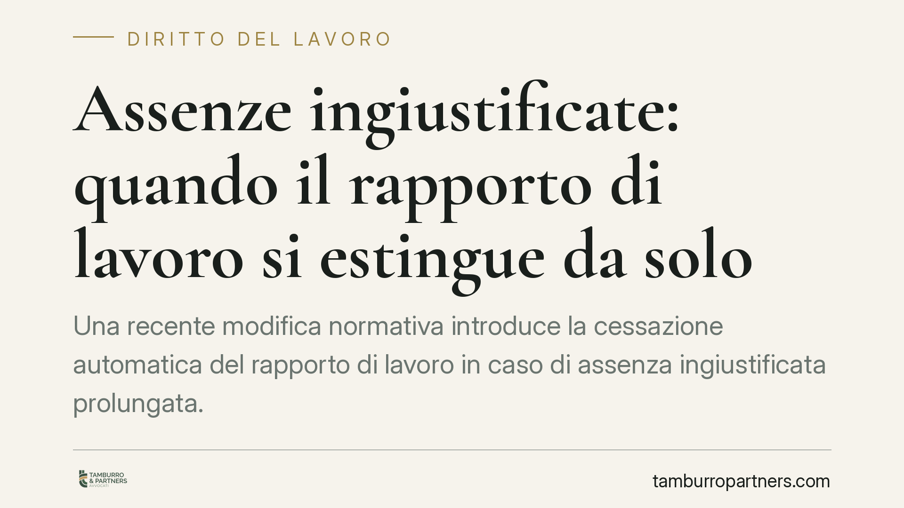

Assenze ingiustificate: quando il rapporto di lavoro si estingue da solo
Una recente modifica normativa introduce la cessazione automatica del rapporto di lavoro in caso di assenza ingiustificata prolungata. Non serve più un formale licenziamento: superata la soglia temporale, il rapporto si considera risolto per volontà del lavoratore. Una svolta che incide su tutele, oneri contributivi e accesso agli ammortizzatori sociali, con effetti concreti per imprese e prestatori.

Il fatto
Il legislatore è intervenuto sulla disciplina delle dimissioni con una regola destinata a modificare la gestione delle assenze prolungate. Il meccanismo è semplice nella sostanza: quando il lavoratore si assenta senza giustificazione oltre un determinato periodo, il rapporto si considera risolto per sua volontà, senza necessità di un provvedimento di licenziamento da parte del datore.
L'obiettivo dichiarato è duplice. Da un lato, contrastare le cosiddette dimissioni "di fatto", situazioni in cui il lavoratore abbandona il posto senza formalizzare la scelta, spesso per accedere impropriamente alla NASpI (l'indennità di disoccupazione). Dall'altro, ridurre l'onere economico che tali condotte generano su Stato e imprese, quantificato in circa 180 milioni di euro.
Inquadramento normativo
La novità si innesta sull'impianto dell'art. 26 del Dlgs 151/2015, che disciplina la procedura telematica delle dimissioni e della risoluzione consensuale. Il nuovo comma 7-bis prevede che, in caso di assenza ingiustificata protratta oltre il termine fissato dal contratto collettivo applicabile — o, in mancanza, oltre quindici giorni — il rapporto si intenda risolto per volontà del lavoratore.
Il datore deve comunicare l'assenza all'Ispettorato nazionale del lavoro (INL), che può verificare la genuinità della situazione. La regola non opera se il lavoratore dimostra l'impossibilità di comunicare i motivi dell'assenza per causa di forza maggiore o per fatto imputabile al datore.
La conseguenza pratica più rilevante riguarda l'accesso agli ammortizzatori sociali: poiché la cessazione è equiparata a dimissioni volontarie, viene meno il diritto alla NASpI, che spetta di regola solo in caso di perdita involontaria dell'occupazione.
Implicazioni pratiche
Per il lavoratore, il cambiamento è significativo. Un'assenza non comunicata e prolungata non è più una zona grigia: superata la soglia, produce automaticamente l'estinzione del rapporto, con perdita della tutela contro la disoccupazione. Non basta "sparire" per poi contestare un licenziamento; qui non c'è alcun licenziamento da impugnare.
Restano fermi i casi in cui l'assenza è giustificata: malattia documentata, infortunio, permessi, forza maggiore. La differenza tra assenza giustificata e ingiustificata diventa quindi decisiva, e l'onere di provare la giustificazione grava sul lavoratore.
Per il datore, la norma offre uno strumento più rapido rispetto alla procedura disciplinare, ma non lo esonera dagli obblighi di comunicazione all'INL. Un uso improprio — ad esempio per aggirare le tutele contro il licenziamento — resta esposto a contestazioni. La verifica dell'effettiva ingiustificatezza dell'assenza è il punto critico.
Da non trascurare il ruolo dell'Inps, che gestisce la NASpI e valuta i presupposti per l'erogazione: la nuova qualificazione del rapporto come risolto per volontà del lavoratore incide direttamente sull'esito delle domande.
Cosa fare in concreto
- Verifica il contratto collettivo applicabile: controlla il termine oltre il quale l'assenza fa scattare la cessazione automatica, perché può differire dalla soglia legale di quindici giorni.
- Comunica sempre e per iscritto eventuali impedimenti: se non puoi presentarti, documenta subito il motivo (certificato medico, PEC, raccomandata) e conserva la prova dell'invio.
- Datori: rispettate la procedura di segnalazione all'INL prima di considerare risolto il rapporto; l'automatismo non elimina l'obbligo di verifica.
- Conserva ogni documento utile a dimostrare la giustificazione dell'assenza o l'impossibilità di comunicarla per causa non imputabile.
- Consultate un professionista in caso di dubbi sulla qualificazione dell'assenza o sull'accesso alla NASpI, prima che i termini decorrano.
Un'ultima avvertenza
La distinzione tra abbandono del posto e assenza giustificata non è formale: da essa dipendono la continuità del rapporto e l'accesso alle tutele economiche. Consigliamo di non sottovalutare mai una comunicazione mancata e di intervenire tempestivamente, perché la soglia temporale, una volta superata, produce effetti difficilmente reversibili.
---
*Contributo informativo a cura di Tamburro & Partners - Avv. Giuseppe Tamburro. Non costituisce parere legale.*
Ogni storia di lavoro ha i suoi tempi.
Se gestisci HR e vuoi un confronto su contenzioso, ispezioni o licenziamenti, scrivi allo studio. Ti rispondiamo entro un giorno lavorativo.